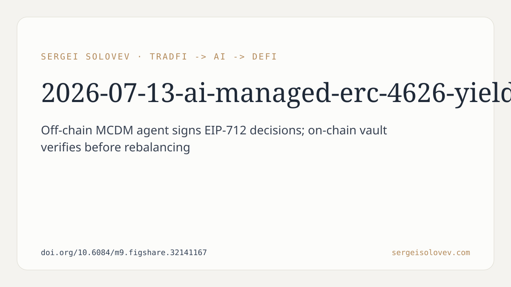

```markdown
# AI-Managed ERC-4626 Yield Vault with Multi-Criteria Decision Making: Design, Implementation, and Formal Verification
**Sergei Solovev | | 13 July 2026**
---
This preprint describes a prototype DeFi yield vault where an off-chain AI agent decides when and how to move user deposits between two lending protocols — Aave V3 and Compound V3 — on the Ethereum Sepolia testnet, using USDC as the underlying asset. The vault conforms to the ERC-4626 tokenised vault standard, which is a sensible and interoperable choice.
The agent uses Multi-Criteria Decision Making (MCDM) with weighted scoring across four factors: yield, risk, cost-efficiency, and stability. Crucially, the agent does not push decisions on-chain blindly. Instead it signs them using EIP-712 typed data, producing a cryptographic fingerprint that the smart contract can verify before executing any rebalance. This means every rebalance is traceable and the chain can reject decisions that were not produced by the authorised agent.
As a fallback, Chainlink Automation is wired in to keep the protocol alive if the off-chain agent goes dark.
Formal invariant testing ran over 76,800 randomised function calls and recorded zero violations. That is the primary quantitative claim in the paper.
---
The zero-violation invariant result is real and meaningful — but in a specific and limited sense. Invariant testing with randomised inputs is good engineering practice. It tells you that the contract's core accounting properties (deposits, withdrawals, share calculations) held across a large sample of random states. It is not a proof of correctness in the mathematical sense; it is an absence of counterexamples within the tested input space.
The EIP-712 signed decision architecture is a thoughtful design choice. It cleanly separates computational logic (off-chain, flexible) from trust enforcement (on-chain, verifiable). This pattern is not new, but applying it to agent-driven vault rebalancing is a reasonable combination. It solves a real problem: how do you let an autonomous agent act on-chain without giving it unchecked privileges?
The Chainlink Automation fallback is operationally important. Any system that depends on an off-chain process needs a liveness guarantee. Including this from the start, rather than bolting it on later, reflects sound system design.
---
This is a Sepolia testnet deployment. Sepolia has no real liquidity dynamics, no MEV, no gas price volatility, and no actual financial risk for participants. Protocol behaviour on testnet and mainnet can diverge substantially. Nothing in this paper establishes that the vault would perform comparably — or even correctly — under mainnet conditions.
The paper does not report any comparison of yield outcomes. There is no benchmark: not against a static deposit in a single protocol, not against a naive highest-APY strategy, not against an existing yield aggregator. The MCDM approach is argued to be superior to "simple APY comparison," but no empirical evidence of better outcomes is presented. The weights assigned to the four scoring factors (yield, risk, cost-efficiency, stability) are described but their derivation and sensitivity are not evaluated.
The invariant tests tell us the vault's accounting is robust, but they say nothing about economic security. Flash loan attacks, oracle manipulation, and governance attacks on the underlying protocols (Aave V3 or Compound V3) are entirely outside the scope of what was tested. A vault that routes funds between third-party protocols inherits the attack surface of those protocols.
The "AI agent" framing deserves scrutiny. The system is a Python script applying a weighted scoring function. That is a legitimate and maintainable engineering choice, but it is deterministic rule-following rather than learned or adaptive behaviour. Calling it an "AI agent" is accurate by a broad definition, but readers expecting machine learning or adaptive strategy should note that this is not what is described.
Finally, the preprint does not address the economics of rebalancing in practice. Every rebalance costs gas. Whether the yield differential between Aave V3 and Compound V3 at any given moment exceeds the transaction cost of moving funds is a central question for any real yield optimiser — and it is not answered here.
---
Despite the above, this is a genuinely useful piece of engineering documentation. The EIP-712 signed decision pattern for agent-authorised on-chain actions is well-explained and the code is public. Developers building similar systems have a working reference implementation to examine, adapt, or reject.
The formal invariant testing methodology is documented with a concrete scale (76,800+ calls, zero violations). That is a reproducible standard other projects can compare against or exceed.
The system also demonstrates how to combine off-chain computational logic with on-chain verification in a way that does not require trusting the agent unconditionally. That architectural question — how much autonomy to delegate to an off-chain process, and how to bound it — is an open problem in DeFi system design. This paper contributes one worked example.
---
This is a testnet prototype with solid defensive engineering and no yield performance data. The absence of a benchmark comparison is the most significant gap. The claim that MCDM outperforms simple APY comparison is unsubstantiated by the evidence presented. The architecture is sensible and the formal testing is real. What this paper contributes is a design pattern and a reference implementation, not a demonstration that the strategy works economically. Mainnet deployment with real funds would require substantially more validation, including economic modelling, gas cost analysis, and protocol-level risk assessment.
The negative space here is not embarrassing — it reflects an honest scope. A testnet prototype that establishes safety invariants and documents its architecture is a legitimate first step. It should be read as such, not as a deployed system with proven returns.
---
Full preprint: https://doi.org/10.6084/m9.figshare.32141167
```